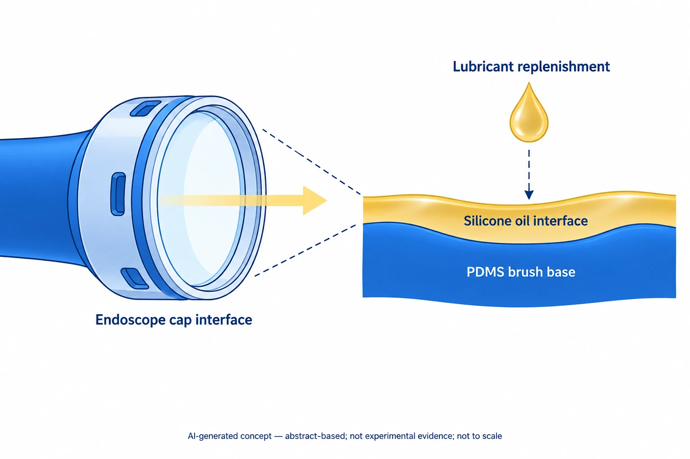

Research context and placement
A liquid interface addresses blood/mucus fouling and fogging on an endoscope cap, fitting antifouling during host contact.
Research background
This disposable-cap study addresses endoscope fogging and blood or mucus fouling.
Approach and advances
PDMS brushes and silicone oil form a replenishable interface.

AI-generated concept of SHIELD-C’s PDMS-brush/silicone-oil interface and lubricant replenishment described in the public abstract. The cap outline and bands are functional symbols, not actual geometry, experimental imagery or clinical outcomes.
Judgment uses the publisher-registered Crossref abstract only. Arrows denote optical path and replenishment, not transmittance, restored vision or automated supply. Mounting hardware, brush molecular arrangement, thickness and replenishment procedures are not reproduced. Article-depth work remains blocked.
This is not a reproduced paper figure and does not establish permission to reuse the original figure.
Generated in ChatGPT on the web from concepts verified in the public abstract and independently reviewed within that abstract-only scope. This does not claim verification of the main text or supplements. Display processing is limited to WebP encoding, without cropping or content editing.
Evaluation and conditions
Public SI shows wetting, repeated-dipping, cell and hemolysis tests; detailed ex vivo methods remain unread.
Key findings
Representative images retain visibility after 100 blood dips. Conflicting axis/legend directions in S14C prevent quantitative interpretation.
Limits and open questions
Other pH, CA/SA and fluid labels conflict. SI replenishment, sterilization and aging evidence does not establish long-term durability or patient safety.
Related external research
A bioinspired omniphobic surface coating on medical devices prevents thrombosis and biofouling
Both retain liquid interfaces to resist fouling; #93 focuses on visibility and a replenishable cap.
Vascular thrombosis endpoints do not establish endoscopic fog or mucus removal.
Abstract checkedCorresponding-author verification
Jungmok Seo: corresponding authorThis record concerns Jungmok Seo’s correspondence designation. Author order or an asterisk alone is not treated as confirmation; this check is separate from verification of the research content.
- Correspondence evidence source ↗
10.1021/acsami.6c04312
resource_doi and references; file am6c04312_si_002.pdf · public_publisher_supplement_repository_metadata_read
- Correspondence evidence source ↗
* Corresponding author. E-Mail: [redacted] (Prof. Jungmok Seo), [redacted] (Seung Hoon Lee, MD, PhD)
Supporting Information page S1: title, author list, corresponding-author note and named emails · public_publisher_supplement_first_page_read
- Main-text review scope
- The publisher-registered Crossref abstract was reread. The ACS article page returned 403; the main text, main figures and main experimental methods were not read.
- Supplementary review scope
- The DOI-matched am6c04312_si_002.pdf was downloaded from official ACS Figshare. Text and rendered pages S1–S20 were read: authors/affiliations, panels/axes/captions of Figures S1–S16, and Tables S1/S2. This is a supplementary figure/table review without the detailed main Methods. The separate supplementary video was not reviewed; raw data and reproducibility were not audited.
- Pending verification
- The final main text for DOI 10.1021/acsami.6c04312 is still needed for ex vivo tissue/sample/procedure details; species, blood source, dose and follow-up in safety testing; flow/load/replenishment and sterilization conditions; and the visual-score definition. Caption/axis/legend inconsistencies in SI Figures S4/S5/S6/S14 also need reconciliation. These materials do not establish a clinical trial, patient safety or three-year real-time durability. No school Mini was accessed.
COVERAGE & OUTREACH
Coverage and outreach
Links are checked for their relationship to this paper. Media publication does not establish independent reporting or additional experimental validation.
내시경 캡 연구, ACS Applied Materials & Interfaces 표지 논문 선정 ↗
The disposable-endoscope-cap news card and ACS AMI 18(25) match #93's exact title, authors and DOI linked on the same site.
Partial body read The actual news card and home-page paper identity were read. Cover selection is recorded as the author's announcement; the publisher's cover caption remains unverified.
Sources and verification scope
The publisher-registered Crossref abstract was reread. The ACS article page returned 403; the main text, main figures and main experimental methods were not read. The DOI-matched am6c04312_si_002.pdf was downloaded from official ACS Figshare. Text and rendered pages S1–S20 were read: authors/affiliations, panels/axes/captions of Figures S1–S16, and Tables S1/S2. This is a supplementary figure/table review without the detailed main Methods. The separate supplementary video was not reviewed; raw data and reproducibility were not audited.
The additional commentary is editorially approved within the stated evidence scope. This does not imply complete verification of all main-text and supplementary material.
- Additional main-text review scope
- The publisher-registered Crossref abstract was reread. The ACS article page returned 403; the main text, main figures and main experimental methods were not read.
- Additional supplementary review scope
- The DOI-matched am6c04312_si_002.pdf was downloaded from official ACS Figshare. Text and rendered pages S1–S20 were read: authors/affiliations, panels/axes/captions of Figures S1–S16, and Tables S1/S2. This is a supplementary figure/table review without the detailed main Methods. The separate supplementary video was not reviewed; raw data and reproducibility were not audited.
- Public publication baseline ↗ · #93 · 2026-10-03
- Crossref metadata ↗: Only public bibliographic metadata registered with Crossref was checked. This does not mean that the publisher page, abstract, or full text was read; full-text verification in the school Chrome session remains pending. Manual comparison found presence/absence of the article A. This was adjudicated as a minor bibliographic variation referring to the same paper; original values were retained. license_urls lists registered links and does not establish permission to redistribute text or figures. It may include TDM or posting-policy links.
- Source for updated publication metadata ↗
Bibliographic and publication-status check; separate from main-text review. - Author-list and contribution evidence ↗
Official SI S1: complete author order, equal-contribution footnote 1, and correspondence marks *. - Author-list and contribution evidence ↗
message.author: 12 names including Seung-No Hong. Role interpretation uses the SI footnotes. - A Disposable Endoscope Cap Maintaining Clear Surgical Visualization under Fogging and Fouling ↗
publisher_registered_abstract_via_Crossref · Crossref response message.abstract, title and DOI; read 2026-10-03; distinguished from direct publisher-site access. - A Disposable Endoscope Cap Maintaining Clear Surgical Visualization under Fogging and Fouling ↗
publisher_direct_access_failed · ACS resolved URL returned retrieval error; 2026-10-03 - A bioinspired omniphobic surface coating on medical devices prevents thrombosis and biofouling ↗
public_external_abstract · Abstract and DOI metadata; read 2026-10-03. - Disposable Endoscope Cap Maintaining Clear Surgical Visualization under Fogging and Fouling ↗
public_publisher_supplement_pdf_read · 2026-10-06; see the section-specific review locations below. S8 Figure S6B/C; S18 Figure S16 - Additional commentary source ↗
Research background · message.abstract · publisher_registered_abstract_read - Additional commentary source ↗
Approach and advances · message.abstract · publisher_registered_abstract_read - Additional commentary source ↗
Approach and advances · S8 Figure S6B/C; S18 Figure S16 · public_publisher_supplement_pdf_read - Additional commentary source ↗
Evaluation and conditions · S5 Figure S3; S11–S14 Figures S9–S12; S16 Figure S14 · public_publisher_supplement_pdf_read - Additional commentary source ↗
Key findings · S16 Figure S14; S18 Figure S16; S20 Table S2 · public_publisher_supplement_pdf_read - Additional commentary source ↗
Limits and open questions · S6/S7 Figures S4/S5; S8 Figure S6; S9 Figure S7; S11–S14 Figures S9–S12; S16 Figure S14; S19 Table S1 · public_publisher_supplement_pdf_read - Additional commentary source ↗
Limits and open questions · message.abstract: in vitro / ex vivo boundary · publisher_registered_abstract_read - Additional commentary source ↗
Connections to related work · Existing baseline evidence.external: abstract read 2026-10-03; fresh Nature fetch failed on 2026-10-06 · prior_public_external_abstract_review_carried_forward - Additional commentary source ↗
Connections to related work · message.abstract · publisher_registered_abstract_read